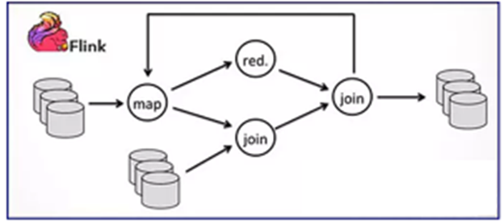

Flink概述
- Flink是一个批处理和流处理结合的统一计算框架，其核心是一个提供了数据分发以及并行化计算的流数据处理引擎。它的最大亮点是流处理，是业界最顶级的开源流处理引擎。
- Flink与Storm类似，属于事件驱动型实时流系统。
特点:
(1) Streaming-first:流处理引擎 (2) Fault-tolerant : 容错，可靠性，checkpoint（也是一家安全公司）
(3)Scalable:可扩展性，1000节点以上 (4) Performance:性能，高吞吐量，低延迟
适用场景：
Flink最适合的应用场景是低时延的数据处理场景：高并发处理数据，时延毫秒级，且兼具可靠性
关键特性：
低时延：提供ms级时延的处理能力，
Exactly Once：提供异步快照机制，保证所有数据真正只处理一次。
HA：JobManager支持主备模式，保证无单点故障。
水平扩展能力：TaskManager支持手动水平扩展。
Hadoop兼容性：

Flink能够支持Yarn，能够从HDFS和HBase中获取数据；
能够使用所有的Hadoop的格式化输入和输出；
能够使用Hadoop原有的Mappers和Reducers，并且能与Flink的操作混合使用；
能够更快的运行Hadoop的作业。
流式计算框架的性能对比：

Flink原理与技术架构
Flink架构：

注：
- Data storage底层是数据存储
- Single node execution表示的是部署方式
- Local Environment等表示的是不同的运行环境
- Flink Local Runtime表示是运行线程
- Flink Optimizer，Flink Stream Builder等表示的是优化器
- Common API表示的是Flink平台的API
- Scala API和Java API表示的是对外提供的API
Flink在FusionInsight
HD中的集成情况